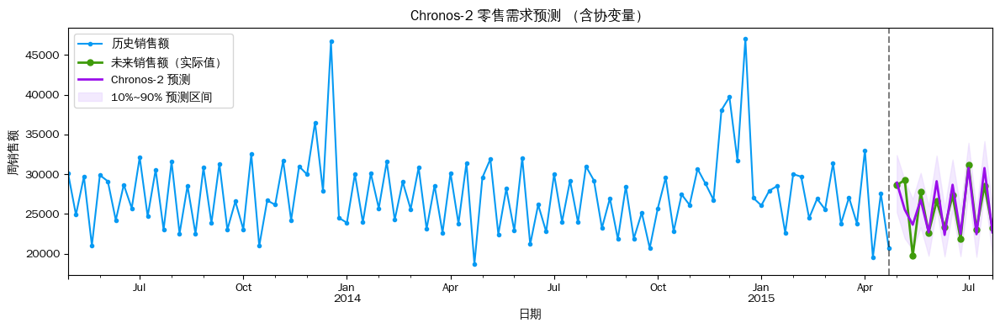
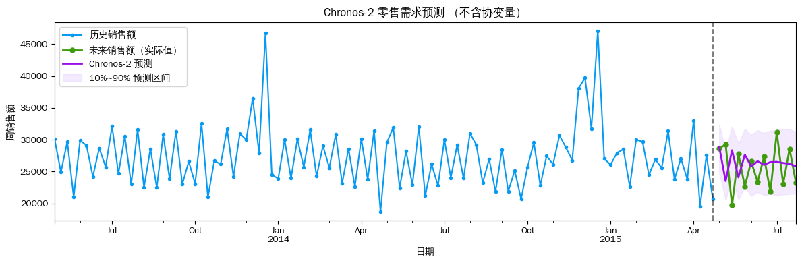
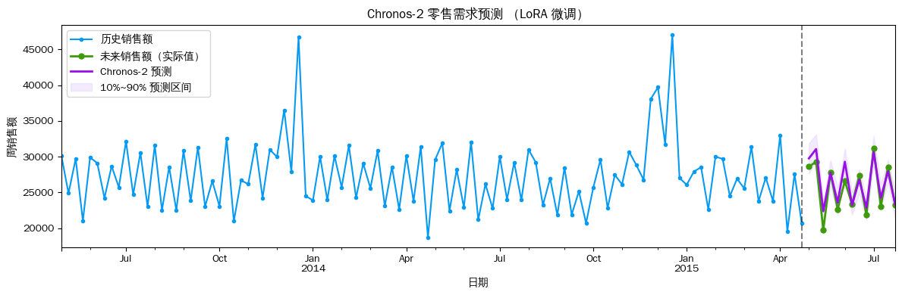

Chronos-2 时序预测——零售需求（含协变量）
使用 Amazon Chronos-2 预测门店下一季度（13周）的周销售额，以 Open、Promo、SchoolHoliday、StateHoliday 作为已知未来协变量，并与不含协变量的基线对比。
数据：AutoGluon retail_sales（Rossmann 门店销售，周频，门店 ID = "1"）
预测步长：13 周
import os
os.environ["CUDA_VISIBLE_DEVICES"] = "0"
import pandas as pd
import numpy as np
import matplotlib.pyplot as plt
from chronos import BaseChronosPipeline, Chronos2Pipeline
plt.rcParams['font.sans-serif'] = ['WenQuanYi Zen Hei', 'WenQuanYi Micro Hei']
plt.rcParams['axes.unicode_minus'] = False
pipeline: Chronos2Pipeline = BaseChronosPipeline.from_pretrained("amazon/chronos-2", device_map="cpu")TARGET = 'Sales'
ID_COL = 'id'
TS_COL = 'timestamp'
TIMESERIES_ID = '1'
PREDICTION_LENGTH = 13
SHOW_HISTORY = 104
sales_context_df = pd.read_parquet(
'https://autogluon.s3.amazonaws.com/datasets/timeseries/retail_sales/train.parquet',
engine='fastparquet'
)
sales_context_df[TS_COL] = pd.to_datetime(sales_context_df[TS_COL])
sales_test_df = pd.read_parquet(
'https://autogluon.s3.amazonaws.com/datasets/timeseries/retail_sales/test.parquet',
engine='fastparquet'
)
sales_test_df[TS_COL] = pd.to_datetime(sales_test_df[TS_COL])
# future_df 仅保留协变量（去掉目标列 Sales）
sales_future_df = sales_test_df.drop(columns=TARGET)
print('训练数据:', sales_context_df.shape, '| 列:', list(sales_context_df.columns))
print(f'时间范围: {sales_context_df[TS_COL].min().date()} ~ {sales_context_df[TS_COL].max().date()}')
print('预测期:', sales_test_df[TS_COL].min().date(), '~', sales_test_df[TS_COL].max().date())
sales_context_df.head(3)训练数据: (133800, 8) | 列: ['id', 'timestamp', 'Sales', 'Open', 'Promo', 'SchoolHoliday', 'StateHoliday', 'Customers']
时间范围: 2013-01-13 ~ 2015-04-26
预测期: 2015-05-03 ~ 2015-07-26| id | timestamp | Sales | Open | Promo | SchoolHoliday | StateHoliday | Customers | |
|---|---|---|---|---|---|---|---|---|
| 0 | 1 | 2013-01-13 | 32952.0 | 0.857143 | 0.714286 | 5.0 | 0.0 | 3918.0 |
| 1 | 1 | 2013-01-20 | 25978.0 | 0.857143 | 0.000000 | 0.0 | 0.0 | 3417.0 |
| 2 | 1 | 2013-01-27 | 33071.0 | 0.857143 | 0.714286 | 0.0 | 0.0 | 3862.0 |
# 使用协变量预测
sales_pred_df = pipeline.predict_df(
sales_context_df,
future_df=sales_future_df,
prediction_length=PREDICTION_LENGTH,
quantile_levels=[0.1, 0.5, 0.9],
id_column=ID_COL,
timestamp_column=TS_COL,
target=TARGET,
)
print('预测结果维度:', sales_pred_df.shape)
sales_pred_df.head()预测结果维度: (14495, 7)| id | timestamp | target_name | predictions | 0.1 | 0.5 | 0.9 | |
|---|---|---|---|---|---|---|---|
| 0 | 1 | 2015-05-03 | Sales | 28939.392578 | 25214.275391 | 28939.392578 | 32411.095703 |
| 1 | 1 | 2015-05-10 | Sales | 25541.919922 | 21921.328125 | 25541.919922 | 29191.929688 |
| 2 | 1 | 2015-05-17 | Sales | 23640.238281 | 20500.339844 | 23640.238281 | 26884.664062 |
| 3 | 1 | 2015-05-24 | Sales | 26778.261719 | 23318.355469 | 26778.261719 | 30162.820312 |
| 4 | 1 | 2015-05-31 | Sales | 22679.359375 | 19722.279297 | 22679.359375 | 25990.039062 |
def plot_chronos_retail(context_df, pred_df, test_df, timeseries_id, title_suffix=''):
ts_ctx = context_df.query(f"{ID_COL} == @timeseries_id").set_index(TS_COL)[TARGET]
ts_pred = pred_df.query(f"{ID_COL} == @timeseries_id and target_name == @TARGET").set_index(TS_COL)[['0.1', 'predictions', '0.9']]
ts_gt = test_df.query(f"{ID_COL} == @timeseries_id").set_index(TS_COL)[TARGET]
start_idx = max(0, len(ts_ctx) - SHOW_HISTORY)
plot_from = ts_ctx.index[start_idx]
ts_ctx = ts_ctx[ts_ctx.index >= plot_from]
fig, ax = plt.subplots(figsize=(12, 4))
ts_ctx.plot(ax=ax, label='历史销售额', color='xkcd:azure', marker='o', markersize=3)
ts_gt.plot(ax=ax, label='未来销售额（实际值）', color='xkcd:grass green', marker='o', markersize=5, linewidth=2)
ts_pred['predictions'].plot(ax=ax, label='Chronos-2 预测', color='xkcd:violet', linewidth=2)
ax.fill_between(ts_pred.index, ts_pred['0.1'], ts_pred['0.9'],
alpha=0.35, label='10%~90% 预测区间', color='xkcd:light lavender')
ax.axvline(x=context_df.query(f"{ID_COL} == @timeseries_id")[TS_COL].max(),
color='black', linestyle='--', alpha=0.5)
ax.set_title(f'Chronos-2 零售需求预测 {title_suffix}')
ax.set_xlabel('日期')
ax.set_ylabel('周销售额')
ax.legend(loc='upper left')
plt.tight_layout()
plt.show()
plot_chronos_retail(sales_context_df, sales_pred_df, sales_test_df,
TIMESERIES_ID, title_suffix='（含协变量）')
# 对比：不含协变量的基线
sales_pred_no_cov = pipeline.predict_df(
sales_context_df[[ID_COL, TS_COL, TARGET]],
future_df=None,
prediction_length=PREDICTION_LENGTH,
quantile_levels=[0.1, 0.5, 0.9],
id_column=ID_COL,
timestamp_column=TS_COL,
target=TARGET,
)
plot_chronos_retail(sales_context_df, sales_pred_no_cov, sales_test_df,
TIMESERIES_ID, title_suffix='（不含协变量）')
# 误差指标对比
gt = (sales_test_df.query(f"{ID_COL} == @TIMESERIES_ID")
.sort_values(TS_COL)[TARGET].values)
def calc_metrics(pred_df, timeseries_id, label):
y_pred = pred_df.query(f"{ID_COL} == @timeseries_id and target_name == @TARGET").sort_values(TS_COL)['predictions'].values
mae = np.mean(np.abs(gt - y_pred))
rmse = np.sqrt(np.mean((gt - y_pred) ** 2))
mape = np.mean(np.abs((gt - y_pred) / gt)) * 100
print(f'{label} MAE={mae:.1f} RMSE={rmse:.1f} MAPE={mape:.2f}%')
print('─' * 55)
calc_metrics(sales_pred_df, TIMESERIES_ID, 'Chronos-2 含协变量: ')
calc_metrics(sales_pred_no_cov, TIMESERIES_ID, 'Chronos-2 不含协变量:')
print('─' * 55)───────────────────────────────────────────────────────
Chronos-2 含协变量: MAE=1403.2 RMSE=1876.0 MAPE=5.62%
Chronos-2 不含协变量: MAE=3552.2 RMSE=4167.2 MAPE=14.71%
───────────────────────────────────────────────────────微调
Chronos-2 支持在您自己的数据上进行微调。您可以微调模型的所有权重（全量微调），也可以微调低秩适配器（LoRA），这可以显著减少可训练参数的数量。
微调 API
fit 方法接受以下参数：
- inputs：用于微调的时间序列（与 predict_quantiles 格式相同）
- finetune_mode：“full” 或 “lora”
- lora_config：LoraConfig，当 finetune_mode="lora" 时使用
- prediction_length：微调的预测时间长度
- validation_inputs：可选的验证数据（格式与 inputs 相同）
- learning_rate：优化器学习率（默认：1e-6，我们建议对于 LoRA 使用较高的学习率，例如 1e-5）
- num_steps：训练步骤数（默认：1000）
- batch_size：训练批量大小（默认：256）
返回一个带有微调模型的新管道。
# 使用零售销售数据集准备微调数据
known_covariates = ["Open", "Promo", "SchoolHoliday", "StateHoliday"]
past_covariates = ["Customers"]
train_inputs = []
for item_id, group in sales_context_df.groupby("id"):
train_inputs.append({
"target": group[TARGET].values,
"past_covariates": {col: group[col].values for col in past_covariates + known_covariates},
# 在训练期间不会使用协变量的未来值。
# 但是，我们需要包含它们的名称以表明这些列在预测时将可用
"future_covariates": {col: None for col in known_covariates},
})# 使用全量微调
finetuned_pipeline = pipeline.fit(
inputs=train_inputs,
prediction_length=13,
num_steps=1000,
learning_rate=1e-5,
batch_size=32,
logging_steps=100,
)| Step | Training Loss |
|---|---|
| 100 | 0.662000 |
| 200 | 0.537300 |
| 300 | 0.513700 |
| 400 | 0.463300 |
| 500 | 0.460100 |
| 600 | 0.523700 |
| 700 | 0.458800 |
| 800 | 0.430700 |
| 900 | 0.440700 |
| 1000 | 0.498400 |
# 使用微调模型进行预测
finetuned_pred_df = finetuned_pipeline.predict_df(
sales_context_df,
future_df=sales_future_df,
prediction_length=13,
quantile_levels=[0.1, 0.5, 0.9],
id_column=ID_COL,
timestamp_column=TS_COL,
target=TARGET,
)
plot_chronos_retail(
sales_context_df,
finetuned_pred_df,
sales_test_df,
timeseries_id=TIMESERIES_ID,
title_suffix="（全量微调）",
)
print('─' * 55)
calc_metrics(finetuned_pred_df, TIMESERIES_ID, 'Chronos-2 全量微调: ')
print('─' * 55)───────────────────────────────────────────────────────
Chronos-2 全量微调: MAE=905.2 RMSE=1193.7 MAPE=3.68%
───────────────────────────────────────────────────────# 使用LoRA微调模型
lora_finetuned_pipeline = pipeline.fit(
inputs=train_inputs,
prediction_length=13,
num_steps=1000,
learning_rate=1e-4,
batch_size=32,
logging_steps=100,
finetune_mode="lora",
)| Step | Training Loss |
|---|---|
| 100 | 0.749900 |
| 200 | 0.649700 |
| 300 | 0.598100 |
| 400 | 0.532700 |
| 500 | 0.515100 |
| 600 | 0.569400 |
| 700 | 0.496200 |
| 800 | 0.449700 |
| 900 | 0.451000 |
| 1000 | 0.492700 |
# 使用LoRA微调模型进行预测
lora_finetuned_pred_df = lora_finetuned_pipeline.predict_df(
sales_context_df,
future_df=sales_future_df,
prediction_length=13,
quantile_levels=[0.1, 0.5, 0.9],
id_column=ID_COL,
timestamp_column=TS_COL,
target=TARGET,
)
plot_chronos_retail(
sales_context_df,
lora_finetuned_pred_df,
sales_test_df,
timeseries_id=TIMESERIES_ID,
title_suffix="（LoRA 微调）",
)
print('─' * 55)
calc_metrics(lora_finetuned_pred_df, TIMESERIES_ID, 'Chronos-2 LoRA 微调: ')
print('─' * 55)
───────────────────────────────────────────────────────
Chronos-2 LoRA 微调: MAE=1024.7 RMSE=1335.1 MAPE=4.19%
───────────────────────────────────────────────────────